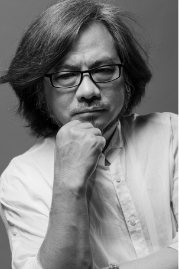
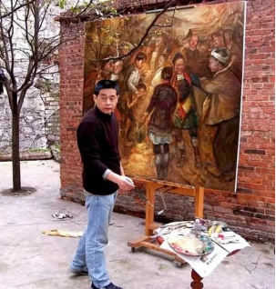

数字传媒学院
数字传媒学院
伍新凤
毕业于贵州大学艺术学院美术系，天海规划创始人、董事长、总经理；首席策划、规划、设计师；中国景观设计专业委员会副主任；国际ICAD注 册A级职业景观设计师；贵州省美术家协会理事；贵州省旅游规划评审专家组成员；贵州省设计艺术委员会副主任。伍新凤的设计坚持“民族现代 化，现代民族化”的创新理念，在规划行业操作模式上推陈出新，在实践中实现了规划设计行业程序一体化服务的理想，致力于城市核心价值与 人文精神的挖掘和升华，几年来已完成五十多项重大的城市改造和景区规划设计项目。
2006年5月以作品“贵州博物馆”荣膺全国环境艺术设计大赛最高奖项
2008年荣获中国规划建筑行业年度“规划建筑金牌设计师”称号；先后获得贵州省“有突出贡献的美术家”、贵阳“城市新锐榜风尚人物”、 “贵州都市年度人物奖”等殊荣。
2010年8月，伍新凤编著的《变城记一城市规划改造篇》、《筑魂记一原创建筑篇》、《梦游记一旅游规划篇》、《造景记一原创景观篇》四部专 著已由中国建筑工业出版社出版发行。
陈红旗
画家、教授，1986年毕业于四川美术学院，虫国美术家协会会员之一，贵州省油画艺术研究会副秘书长。《苗家女》、《织女》1985年被中国美 术馆收藏；《山寨里的笑声》油画1993年参加香港《中国贵州油画》展被印度友人收藏；《盛装》油画1993年参加新加坡报业集团《中国西部高 原油出展》获优秀奖；《醒狮》油画1991年参加北京《西部纺织美术展》获金奖；《风雨桥》油画1994年参加中华人民共和国第八届美术作品 展；《纺织》《水车系列》《汲水》油画1994年在新加坡、马来西亚展出。
1998年参加北京中国98艺术博览会；
1999年在中国贵阳贵州省博物馆策划举办《乌江缘艺术家邀请展》
1999年参加台湾台中、高雄《大西南油画作品展》；
2001年参加虫国油画大展;
2002年《看电影》油画入选延安文艺座谈会讲话60周年全国美展;
2003年参加第三届中国油画展；
2004年受俄罗斯艺术科学院邀请赴俄罗斯研修油画;
2008年杭州西湖当代艺术博览会获油画金奖;
2009年于贵阳举办《尹光中、陈红旗》油画年展;
2009年于杭州举办《岂沙-红旗》个人油画展;
2010年于杭州举办《岂沙一红旗》水彩画展；
2010年于澳门参加《高原来风》油画联展；
2010年于岂沙建立《岂沙一红旗》博物馆。